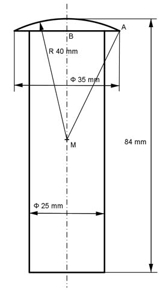

Aufgabe 386 Welche Masse m haben 50 Bolzen mit einer Dichte von 7,85 g/cm³?  Vgesamt = VZylinder + VKugelkappe Satz von Pythagoras im Dreieck MAB: MA = 40 mm MB = h AB = 35 mm/2 = 17,5 mm MA² = MB² + AB² |-AB² MB² = MA² - AB² = 40² mm² - 17,5² mm² = 1 293,75 mm² |√ MB = 36 mm Höhe der Kappe hKappe = 40 mm - 36 mm = 4 mm hZylinder = 84 mm - hKappe = 84 mm - 4 mm = 80 mm rZylinder = dZylinder/2 = 25 mm/2 = 12,5 mm VZylinder = л * rZylinder² * hZylinder VZylinder = л * 12,5² mm² * 80 mm = 39 250 mm³ л VKugelkappe = --- * hKappe² * (3 * rKugel - hKappe) 3 л VKugelkappe = --- * 4² * (3 * 40 - 4) mm³ = 1 943 mm³ 3 Vgesamt = 39 250 mm³ + 1 943 mm³ = 41 193 mm³ = 41,193 cm³ m = 50 * Vgesamt * ρ = 50 * 41,193 cm³ * 7,85 g/cm³ = 16 168 g m = 16,2 kg